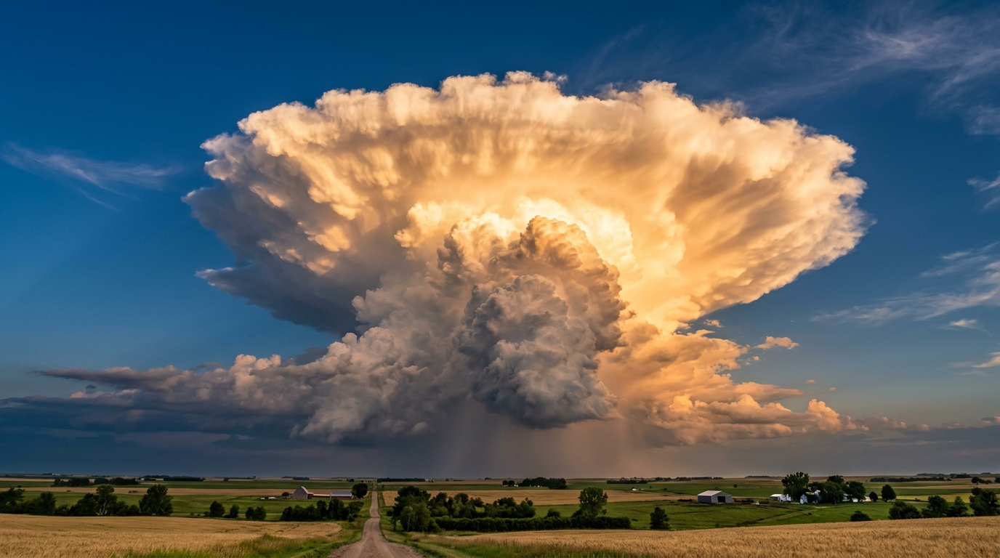

Desenvolvimento vertical
800 m a 12+ km
Cumulonimbus (Cb)
Torre convectiva imponente capaz de atravessar toda a troposfera até formar uma bigorna de gelo no topo, gerando tempestades e raios.
Água e gelo
Tempestades
Topo em bigorna